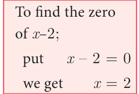
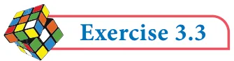

p \(\frac{2}{3}\) \(= \frac{(120 - 120)}{9}\)
\(= 0\)
Therefore,(3x -2) is a factor of
\(3x + x - 20x\) +12

Find the value of m, if (x -2)is a factor of the polynomial
\(- +mx +\) .
Solution

Let p(x) \(= 2x - 6x +mx + 4\)
By factor theorem, (x -2) is a factor of p(x), if \(p(2) = 0\)
\(p(2) = 0\)
2 2( ) \(- 6 2(\) + \()+ = 0 2(8) -\) \()+ + = 0\)
\(- + = 0\)
\(= 2\)

- Check whether p(x) is a multiple of g(x) or not .
p(x) \(= x - 5x + 4x - 3\) ; g(x) \(= x - 2\)
- By remainder theorem, find the remainder when, p(x) is divided by g(x) where,
- p(x) \(= x - 2x - 4x - 1\); g(x) \(= x + 1\)
- p(x) \(= 4x - 12x + 14x - 3\); g(x) \(= 2x - 1\)
- p(x) \(= x - 3x + 4x + 50\) ; g(x) \(= x - 3\)
- Find the remainder when \(3x - 4x + 7x - 5\) is divided by (x+3)
- What is the remainder when x +2018 is divided by \(x - 1\) 2018
- For what value of k is the polynomial p(x) \(= 2x -\) kx \(+ 3x + 10\) exactly divisible by (x \(- 2)\)
- If two polynomials \(2x +\) ax \(+ 4x - 12\) and \(x + x - 2x+ a\) leave the same remainder when divided by (x \(- 3)\), find the value of a and also find the remainder.
- Determine whether (x -1) is a factor of the following polynomials:
- \(x + 5x - 10x + 4\) ii)x \(+ 5x - 5x +1\)
- Using factor theorem, show that (x \(- 5)\) is a factor of the polynomial
\(2x - 5x - 28x + 15\)
- Determine the value of m , if (x \(+ 3)\) is a factor of \(x - 3x -\) mx \(+ 24\) .
- If both (x -2) and x \(- \frac{1}{2}\) are the factors of ax \(+ 5x +b\) , then show that \(a = b\).
- If (x -1)divides the polynomial kx \(- 2x + 25x -\) 26without remainder, then find the value of k .
- Check if (x \(+ 2)\) and (x \(- 4)\) are the sides of a rectangle whose area is \(x - 2x - 8\) by
using factor theorem.